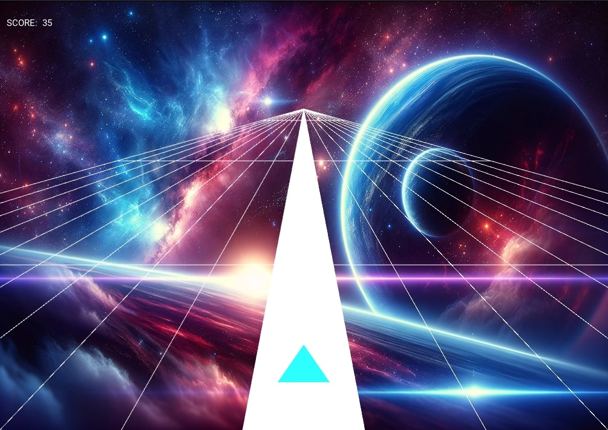

Portfolio
 |
|
| site web pour retaurant |
|  | |
| Stellar Sway: Aventure Cosmique sur Mobile et Desktop |
Développeur applicatif multiplateformes | un ans d'experience
Je développe votre projet web ou vos application mobiles iOS/Android de A à Z
Diplômé en informatique de l'UQAM, spécialisé en développement Full Stack et applications
multiplateformes. Expert en Python, Java, C++, avec une certification en sciences des données (SQL, SQLite, PostgreSQL)
de Udemy. Ma formation complète en Python comprend une maîtrise approfondie de Django et Kivy, ainsi que des
environnements de développement tels que Visual Studio et PyCharm.
En tant que développeur multiplateforme
expérimenté, je maîtrise la conception et le déploiement d'applications sur différentes plateformes, assurant une
expérience utilisateur fluide et cohérente.